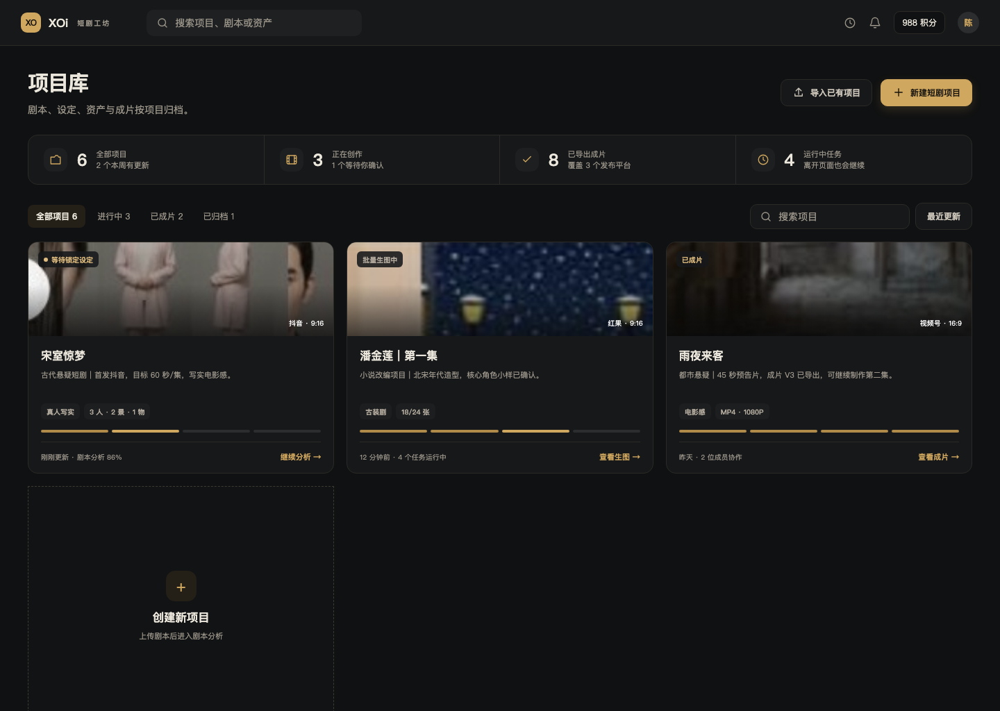
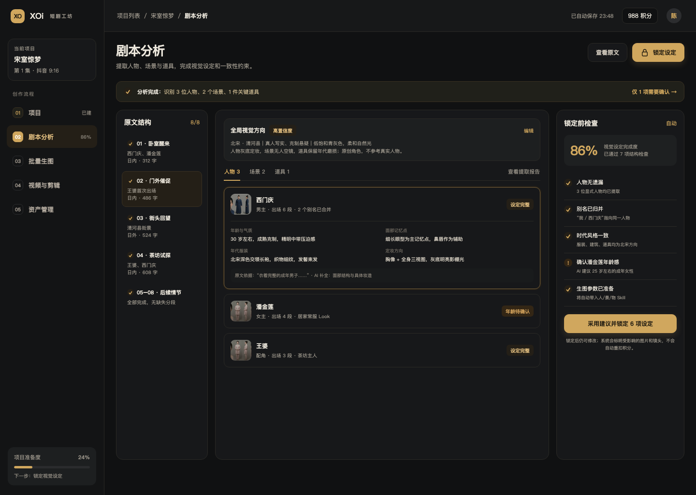
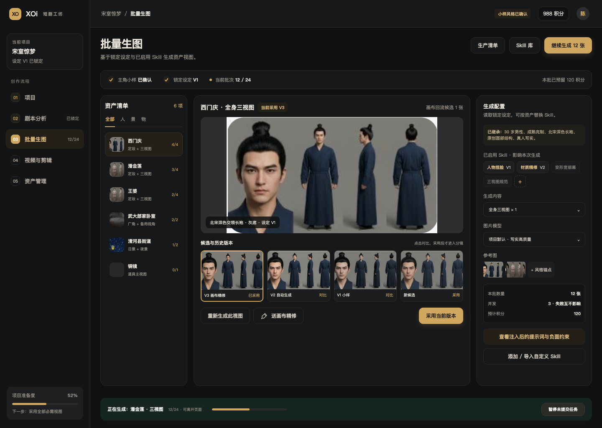
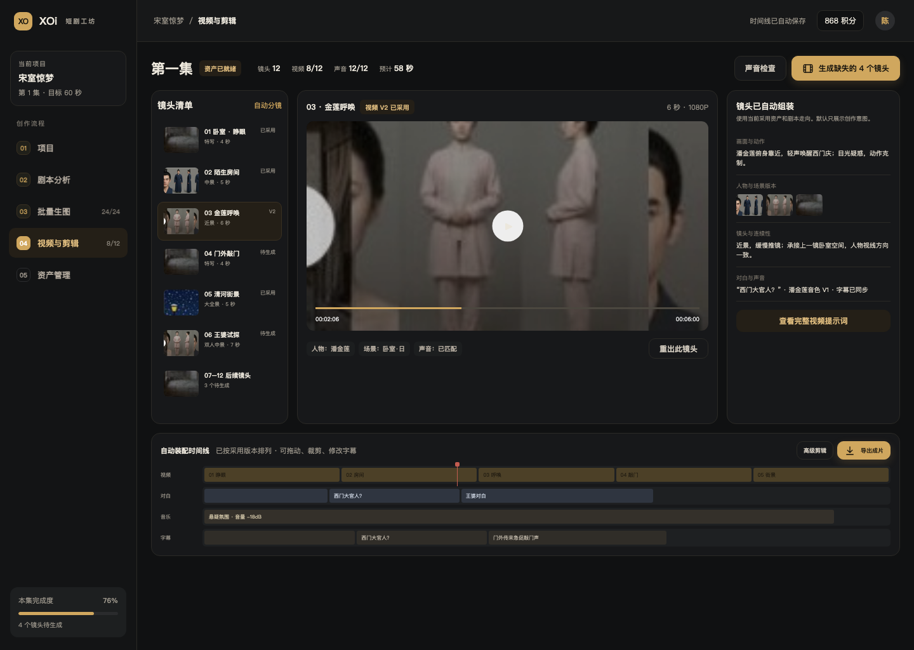
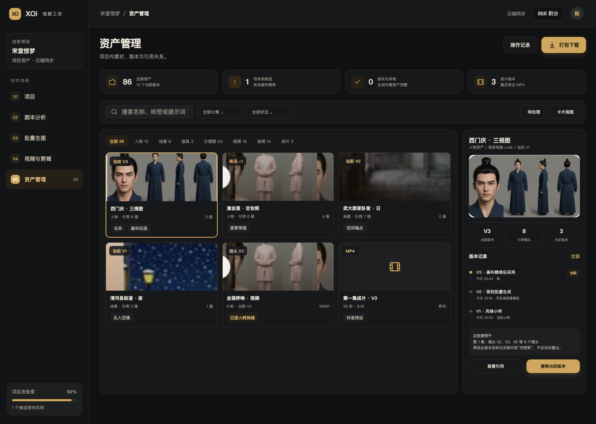

先设定，后生成
人物年龄、年代服装、场景风格和图片方向在分析阶段完成并锁定。
先小样，后批量
先确认主角和主场景，再按必需视图清单受控生成，避免无效抽卡。
只精修不满意
图片连同设定与参考图进入项目画布，选图回流为候选，对比后采用。
自动组装，局部返工
镜头提示词、配音与时间线自动组合，单镜重出不影响其他成果。


剧本为唯一创作入口不再要求用户先选择“快速/导演”等产品内部模式。
项目预设自动继承发布平台、画幅、文字/图片/视频/声音模型集中在项目层。
团队协作准备项目备注、成员、版本与操作记录都归属于项目。


大剧本自动分段块级检查点、滚动摘要与跨块别名归并，失败只重跑变化段。
只询问高影响问题其余字段给出 AI 建议、置信度和原文证据，最后统一确认。
设定未锁定不生图人物 Look、场景锚点、道具状态在此成为正式生产依据。


Skill 自动填充人物捏脸、场景和道具提示词直接读取锁定设定。
小样与成本闸门先确认风格锚点，再显示数量、并发与积分，支持暂停和局部重试。
画布精修回流默认复用项目画布，用户选图带回候选，冲突时不覆盖原图。


只生成缺失镜头已采用视频保留多版本，单镜重出不清空其他成果。
自动绑定资产与声音人物 Look、场景版本、运镜、对白、字幕和连续性自动注入。
轻剪辑默认够用拖动、裁剪、分割、音量与字幕在同一页完成，高级剪辑渐进展开。


全类型统一归档人、景、物、镜头图、视频、音频和成片统一筛选。
当前与历史版本分离精修、重出与上传不会静默覆盖已采用内容。
完整引用链从资产到镜头、时间线和成片均可追溯，上游变更只标记待更新。